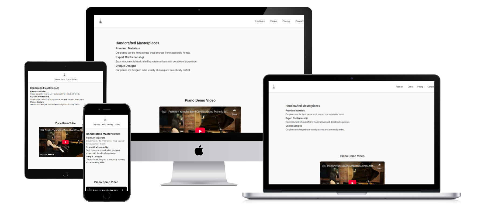
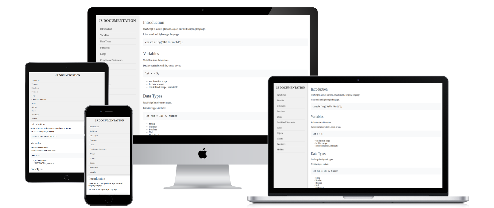
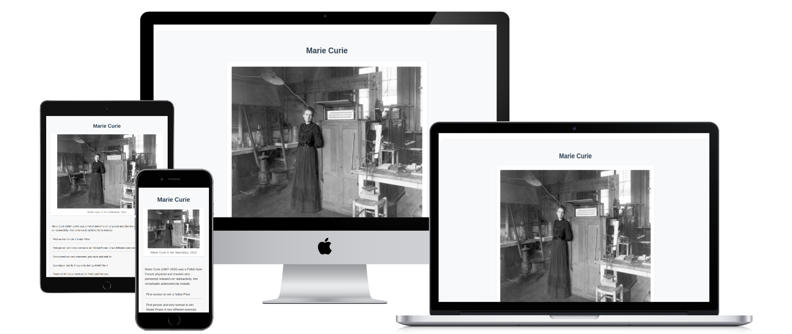

My Work


Premium Piano Landing Page
A basic product landing page built using HTML and CSS. The page showcases a premium piano product with features, demo video, pricing, and a call-to-action form.
Technical Documentation Template
A template for basic technical documentation page built using HTML and CSS. The page provides an introduction to JavaScript, covering topics such as variables, data types, functions, and loops.
Tribute Page for Marie Curie
A basic tribute page to Marie Curie, a Polish-born French physicist and chemist who pioneered research on radioactivity. The page includes a brief biography, a list of her notable achievements, and a link to learn more about her on Wikipedia.
Survey Form
A simple survey form built using HTML and CSS. The form collects user information, including name, email, age, current role, and additional comments.